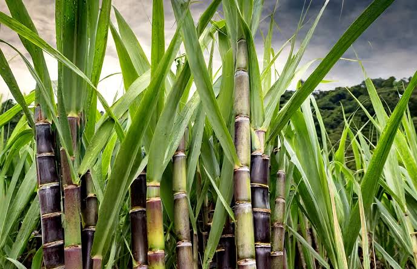

Sugarcane Cultivation Guide

1. Climate & Soil
Requires tropical to subtropical climate with 20–35°C temperature.
Well-drained loamy soil with pH 6.5–7.5 is ideal.
2. Land Preparation
Deep plowing followed by 2–3 harrowings to fine tilth.
Level field and form ridges and furrows at 1–1.2 m spacing.
3. Seed Material & Planting
Use healthy, disease-free setts with 3–4 buds.
Seed rate: 25,000–30,000 setts/acre.
Plant in furrows at 8–10 cm depth with eyes facing sideways.
Planting time: February–March (spring), October–November (autumn).
4. Irrigation Management
First irrigation immediately after planting.
Frequency: Every 7–10 days in summer; 20–25 days in winter.
Avoid water stagnation at any stage.
5. Fertilization
Basal: FYM (8–10 tons/acre), DAP (50 kg), MOP (25 kg).
Top dressing: Urea (100–120 kg) split in 2–3 doses.
Micronutrients like zinc may be applied based on soil tests.
6. Weed & Pest Management
Weed control: Manual weeding and use of Atrazine or 2,4-D pre/post emergence.
Pests: Early shoot borer, top shoot borer — use chlorpyrifos or quinalphos.
Diseases: Red rot, smut — use resistant varieties and fungicidal dips for seed setts.
7. Investment Breakdown (Per Acre)
Input
Estimated Cost (INR)
Setts (Seeds)
₹3,000 – ₹5,000
Fertilizers & Manures
₹4,000 – ₹6,000
Pesticides/Weedicides
₹1,500 – ₹2,500
Labor & Irrigation
₹8,000 – ₹12,000
Total Investment
₹18,500 – ₹25,500 per acre
8. Harvesting & Yield
Ready for harvest in 10–12 months.
Yield: 35–50 tons per acre depending on variety and care.
9. Market Rate & Profit
Rate: ₹3,000 – ₹3,500 per ton of cane.
Gross return: ₹1,05,000 – ₹1,75,000 per acre.
Net profit: ₹80,000 – ₹1,50,000 per acre.